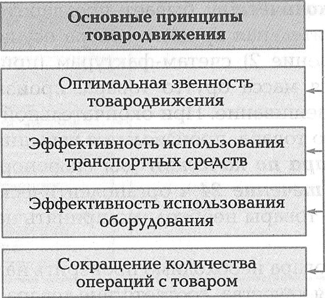
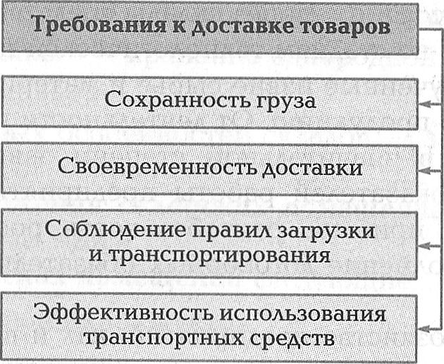

Приемка товаров на производстве состоит из следующих этапов:
- по количеству;
- по качеству.
Приемка по количеству бывает предварительная и окончательная. Предварительная приемка товара осуществляется по накладным (приложение 2) счетам-фактурам (приложение 3). При этом определяется масса брутто товара: производится пересчет тарных мест и взвешивание. При окончательной приемке определяется масса нетто товара, производится взвешивание тары.
Приемка товара по качеству для скоропортящихся товаров производится в течение 24 ч органолептическим методом. Нескоропортящиеся товары необходимо принять не позднее чем через 10 дней.
При приемке товара необходимо проверить наличие сертификатов, удостоверения качества, соответствие товара стандартам и ТУ.
Запрещается принимать: мясо всех видов животных без клейма и ветеринарного свидетельства; сельскохозяйственную птицу и яйца без ветеринарного свидетельства; консервы с нарушением герметичности, бомбажем; овощи и плоды с признаками гнили; грибы соленые, маринованные, сушеные без наличия документа о качестве; продукцию растениеводства без качественного удостоверения.
Если во время приемки обнаруживается недостача, то составляется односторонний акт о выявленной недостаче. Такой товар хранится отдельно, и вызывается поставщик.
В случае обнаружения несоответствия качеству составляется акт о количестве недоброкачественной продукции в присутствии поставщика.
Понятие о товародвижении. Товародвижение — транспортировка товаров от места их производства до места потребления. Существуют основные принципы товародвижения (рис. 2.3).
рис. 2.3

Складская звенность — через сколько складов проходит товар от производителя до потребителя.
Существуют следующие формы товародвижения: складская; транзитная.
Транзитные поставки характерны тем, что товары на предприятия доставляются непосредственно от поставщика, минуя базы. Эта форма широко применяется для поставки скоропортящейся продукции: молока и молочнокислых продуктов, полуфабрикатов, безалкогольных напитков и др. Таким же способом доставляют крупногабаритные товары простого ассортимента, не требующие подсортировки: муку, сахар, макаронные изделия и пр.
Преимущества транзитной формы снабжения состоят в том, что за счет отсутствия дополнительных складских звеньев сокращается срок нахождения товаров в пути, что позволяет обеспечить сохранение их качества; уменьшается размер товарных потерь; сокращается объем погрузо-разгрузочных работ, соответственно снижаются затраты по погрузке и выгрузке товаров, а также расходы по хранению. Однако эта форма имеет и недостатки: не обеспечиваются подсортировка завозимого сырья, снижается надежность продовольственного снабжения, что вызывает необходимость создавать гарантийные запасы товаров на предприятиях. В том случае, когда товары поступают на предприятия мелкими партиями, транзитная форма их поставки не может быть применена, поскольку существуют утвержденные в промышленности и оптовой торговле минимальные нормы транзитного завоза.
Складская форма снабжения отличается от транзитной тем, что в процессе товародвижения продукты от поставщика (промышленного предприятия, оптовой базы и т.п.) сначала поступают на отраслевые подсортировочно-распределительные базы, а затем — на предприятия общественного питания. Во многих случаях товар с отраслевых баз поступает в кладовые головных предприятий, а затем в их филиалы.
Складские поставки позволяют обеспечить предприятия общественного питания скомплектованной и подсортированной продукцией в необходимом количестве, что способствует сокращению запасов на предприятиях. Однако существенным недостатком складской формы снабжения является увеличение расходов, связанных с содержанием складских помещений, перемещением товаров через складские звенья и дополнительными погрузо-разгрузочными работами.
Виды доставки товаров. Применяют два вида доставки товаров:
- централизованный;
- децентрализованный.
При централизованной доставке товары транспортируют на предприятия силами и средствами поставщика, базами общественного питания или специализированной транспортной группой при тресте. Это позволяет снизить расходы предприятия по погрузке, поскольку она осуществляется за счет поставщика.
При децентрализованной доставке товары транспортирует непосредственно предприятие. Этот способ менее эффективен, поскольку вызывает нерациональное использование транспорта: простои, недоиспользование грузоподъемности и увеличение порожних пробегов автомашин.
Маршруты движения транспорта подразделяют на маятниковые и кольцевые. Децентрализованная поставка товаров производится только маятниковым маршрутом, когда машина доставляет товары в адрес одного предприятия. При централизованных поставках преимущественно используется кольцевой маршрут, который позволяет за одну, поездку доставить товары поочередно на несколько предприятий. Централизованная поставка товаров кольцевым маршрутом позволяет лучше использовать транспорт и сократить расходы по перевозке.
К доставке товаров предъявляются определенные требования (рис. 2.4).
рис. 2.4

Для перевозки продовольственных товаров используется специальный транспорт, имеющий маркировку «Продукты». На каждую машину оформляется санитарный паспорт, действующий не более одного года. Скоропортящиеся продукты перевозят в специальных охлаждаемых рефрижераторах.
◄ К предыдущему подразделу 2.1.1▲ НАВЕРХ ▲
► К следующему подразделу 2.2.1